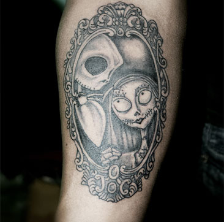
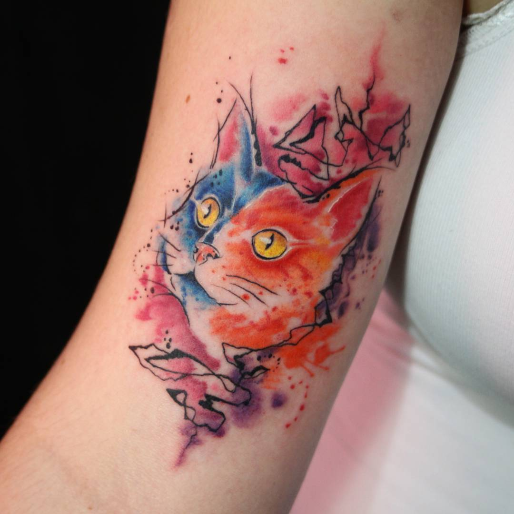

Punhais, âncoras e outros símbolos relacionados à Marinha, caveiras mexicanas, pin-ups e corações são alguns elementos presentes nas tatuagens do estilo old school.


É o aprimoramento da tatuagem tradicional (a old school), também possuindo cores bem vivas. Os desenhos, no entanto, são mais urbanos e modernos, lembrando grafitti e cartoons.


São traços bem largos, com cores vivas e geralmente inspiradas em personagens de quadrinhos.


Um dos estilos mais populares do mundo. Esse estilo, como o próprio nome diz, surgiu em tribos indígenas, inspirados em tribos americanas, maias, incas, astecas, entre outras. Podem ser feitas na cor preta ou outras cores.

A tatuagem oriental é um estilo milenar que se destaca por suas imagens marcantes com significados profundos. Alguns dos símbolos mais comuns são o dragão, a carpa, as gueixas, os samurais e a flor de cerejeira, geralmente desenhados com cores fortes e um detalhamento incrível.

Muito populares nos anos 90, o Graywash se destaca pelo efeito preto-e-branco.

Com características de formas geométricas superficiais ou profundas, elas ganham espaço no mundo dos jovens.


Esse estilo leva o desenho para um lado mais delicado. São imagens pontilhadas baseadas também no preto-e-branco.

Simulam partes robóticas inseridas no corpo humano.

Representação de imagens feitas como pinturas aquarela.
